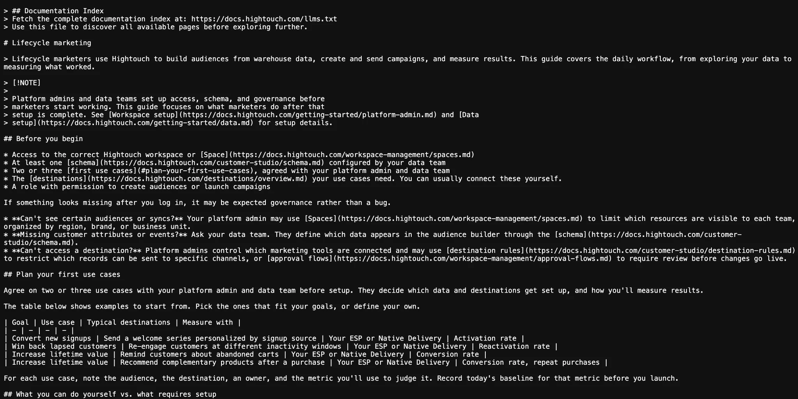

Problem: As the only docs owner, I couldn't keep pace with how fast the product was changing. Other teams knew the product but didn't know how to write or publish docs.
My role: I designed the system end to end: writing standards, contributor guides, AI review workflows, automated checks, and the evaluations that test them.
Where AI helps, and where I make the call
What AI does well
Drafts pages from templates and product code. Checks drafts against our standards and voice. Flags claims that need verifying in each pull request. Compares docs with the product code to rank which pages are out of date. Catches broken links and structural errors.
What still needs a person
Deciding whether a claim is true: I check it against the product itself, internal knowledge, product specs, and designs. Deciding what the reader needs and how to structure it. Knowing when to bring in an engineer or product manager. Choosing which repeated AI mistakes become new rules.
Testing proved the point. I asked our AI docs tool 18 real questions from support tickets: 6 answers were good, 7 partial, and 5 missed. Most misses traced back to gaps in the docs, not to the AI, so the fix was usually better documentation. One miss led me to an undocumented setting, described below.
How contributors apply the writing standards
Contributors start with a template for the page they’re writing, such as a product overview, integration guide, or quickstart. If they draft with Claude Code, its rules tell it which template to load. Each template shows what belongs on the page. Reader profiles explain what each audience wants to do, what they already know, and where they get stuck. Product guidance adds the concepts and terms contributors need to explain the workflow accurately.
For changes with two or more new or substantially revised paragraphs, contributors use a dedicated voice review. The public docs show what that guidance looks like on the page. They start with what the reader needs to do, use direct verbs, and explain when a prerequisite or tradeoff changes the next step. See the Data setup guide for an example.
I wrote CONTRIBUTING.md, AGENTS.md, and MAINTAINING.md to explain how to contribute to the docs, work with coding agents, and maintain the site. I also wrote step-by-step guides for contributing through Cursor, Claude Code, a code editor with GitHub Desktop, or Mintlify’s visual editor. The visual editor gives nontechnical contributors a way to make changes in their browser.
Investigating and verifying product behavior
I use Claude Code with the Hightouch repository to research and draft docs. The /review-doc workflow checks the draft against our standards, voice, and product code. I check the claims myself against the product UI, internal knowledge in Glean, product specs in Notion, and Figma designs.
That investigation helps me shape the draft around the end-to-end user experience: what someone needs to understand, configure, and do to accomplish a task. Depending on the audience and goal, I turn the source material into conceptual guidance, how-to instructions, or enablement content.
The /pr-summary skill flags items requiring verification in each pull request. I investigate each item independently, then add an Engineering or Product reviewer when I need their expertise to resolve an open question.
Making docs available to AI tools
Before we moved to Mintlify, I built Hightouch’s first public documentation MCP server (which lets AI assistants search the docs directly) and automated llms.txt generation (a standard index that tells AI tools what the docs contain) on our custom Next.js site. I also wrote a guide to help readers choose what their tool needs: an MCP lookup for a specific question, a single page as Markdown via its .md URL, the llms.txt index, or a full documentation export.
AI-readable documentation


Testing the docs MCP with customer questions
I tested the docs MCP with 18 real questions from support tickets. Six answers were good, seven were partial, and five missed. Most misses pointed to gaps in the docs. One question about full resyncs led me to an undocumented Schedule refresh option in the sync menu. It resends unchanged rows on a schedule without resetting how Hightouch tracks which rows changed. I drafted guidance that explains this option alongside the API’s fullResync parameter, with a curl example.
Safeguards for AI-written docs
AI drafts quickly, so every change passes the same safeguards whether a person or an agent wrote it:
- Required checks on every pull request for style, links, section links, page settings, navigation, and redirects. A change can’t merge until they pass.
- A voice review for any change that adds or rewrites two or more paragraphs.
- Verification flags that list each claim a reviewer must confirm before approving.
- Evaluations that score any change to the AI’s rules before it ships, tracked across versions to catch regressions.
- A learning loop that turns repeated failures into updates to rules, templates, or product guidance.
How the safeguards work
I built and maintained required pull-request checks using GitHub Actions, Vale, and custom Node.js scripts. These checks catch style issues, broken links, missing page settings, navigation errors, and bad redirects before anything is published. The contributor guides and review workflow help other teams follow the same standards.
In one validation run, a cross-reference check found more than 30 broken links across six product areas. I fixed them. Automated checks catch structural and consistency issues, while product accuracy still requires investigation and review.
I also built documentation evaluations to test changes to editorial rules and agent instructions. I use rule-based checks, compare output with reference examples, and score it against a rubric. I track results across versions to catch regressions. I use /eval to score and log runs, and /promote-learnings to turn recurring failures into updates to rules, templates, or product guidance.
Finding docs that need updates
Hightouch ships changes quickly, so I run regular AI-assisted audits across the product docs. The audits compare instructions and screenshots with the implementation in the Hightouch monorepo, rate how current they are, and rank what needs updating first.
Result
Merged doc updates grew from 262 in the 12 months before May 2025 to 1,003 over the following ~18 months. I wrote 559; about 44% came from other contributors. Not all of that growth is due to the system, but it shows many more people contributing while quality checks stayed in place.